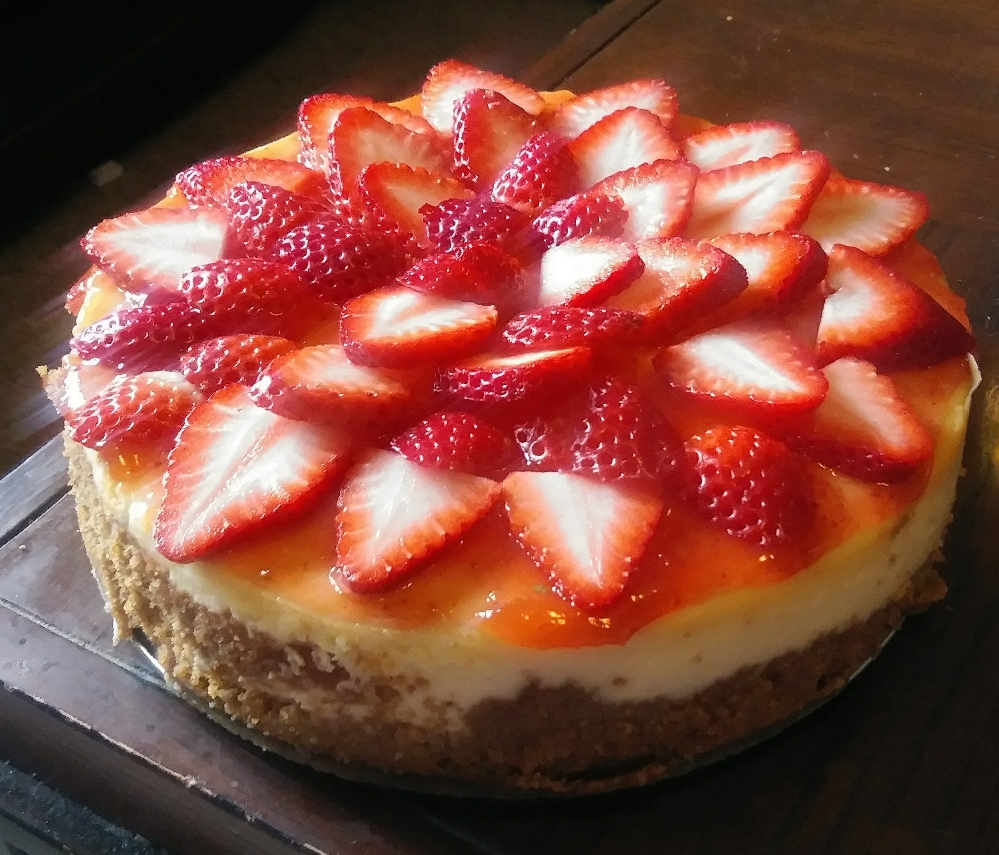

Cheesecake

Description
Originally from allrecipes.com, by user Mary. Named “Mom's Cheesecake”.
Mary described it as “This creamy cheesecake is great with a variety of toppings - or even by itself!”
Ingredients
- 1 ½ cups graham cracker crumbs
- 3 tablespoons white sugar
- ½ teaspoon ground cinnamon
- ¼ cup margarine
- 3 (8 ounce) packages cream cheese
- 1 ½ cups white sugar
- 4 eggs
- 2 teaspoons vanilla extract
- ¼ teaspoon salt
- 2 cups sour cream
Steps
-
Preheat oven to 175°C (350°F).
-
In a medium bowl, combine graham cracker crumbs, 3 tablespoons sugar, cinnamon and melted margarine.
-
Mix all ingredients well and press into bottom and sides of a 9 inch springform pan.
-
In a large bowl, beat cream cheese and sugar until smooth.
-
Blend in the eggs one at a time, then stir in the vanilla and salt.
-
Fold in the sour cream.
-
Pour batter into springform pan.
-
Bake in preheated oven for 1 hour.
-
Turn off oven and leave cake in for at least 30 minutes.